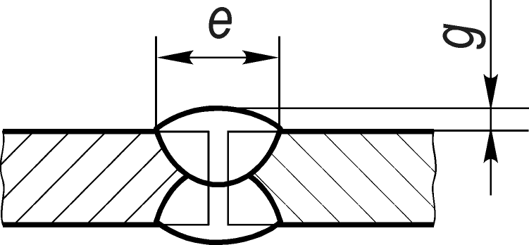

ГОСУДАРСТВЕННЫЙ СТАНДАРТ СОЮЗА ССР
ДУГОВАЯ СВАРКА АЛЮМИНИЯ
И АЛЮМИНИЕВЫХ
СПЛАВОВ В ИНЕРТНЫХ
ГАЗАХ.
СОЕДИНЕНИЯ СВАРНЫЕ
ОСНОВНЫЕ ТИПЫ, КОНСТРУКТИВНЫЕ ЭЛЕМЕНТЫ И РАЗМЕРЫ
ГОСТ 14806-80
Издание официальное
ГОСУДАРСТВЕННЫЙ КОМИТЕТ СССР
ПО УПРАВЛЕНИЮ КАЧЕСТВОМ ПРОДУКЦИИ И
СТАНДАРТАМ
Москва
УДК 621.791.75.052:006.354
Группа B05
ГОСУДАРСТВЕННЫЙ СТАНДАРТ СОЮЗА ССР
ДУГОВАЯ СВАРКА АЛЮМИНИЯ И АЛЮМИНИЕВЫХ
СПЛАВОВ В ИНЕРТНЫХ
ГАЗАХ,
СОЕДИНЕНИЯ СВАРНЫЕ
Основные типы, конструктивные элементы и размеры
Arc welding of aluminium and aluminium alloys in inert
gases.
Welded
joints. Main types, design elements and dimensions
ГОСТ 14806-80
ОКП 0602000000
Срок действия с 01.07.81
до 01.07.96
- Настоящий стандарт распространяется на сварные соединения из алюминия
и алюминиевых сплавов при толщине кромок свариваемых деталей от 0,8 до 60,0 мм
включительно.
Стандарт не распространяется на сварные соединения трубопроводов.
Стандарт устанавливает основные типы сварных соединений, конструктивные элементы и размеры разделки кромок и сварного шва. - В стандарте приняты следующие условные обозначения способов дуговой
сварки в инертных газах:
- РИНп - ручная неплавящимся электродом с присадочным металлом;
- АИНп - автоматическая неплавящимся электродом с присадочным металлом;
- АИНп-3 - автоматическая неплавящимся электродом с присадочным металлом - трехфазная;
- АИП - автоматическая плавящимся электродом - однодуговая;
- ПИП - полуавтоматическая плавящимся электродом.
- Основные типы сварных соединений должны соответсвовать указанным в табл. 1.
- Конструктивные элементы и их размеры должны соответствовать указанным в табл 2-51.
| Тип соединения | Форма подготовленных кромок | Характер сварного шва | Форма поперечного сечения | Толщина свариваемых деталей, мм, для способов сварки | Условное обозначение соединения | |||||
| Подготовленных кромок | Сварного шва | РИНп | АИНп | АИНп-3 | ПИП | АИП | ||||
| Стыковое | С отбортовкой кромок | Односторонний |  | 0,8-2,0 | 0,8-2,0 | - | - | - | C1 | |
| С отбортовкой одной кромки | C3 | |||||||||
| Без скоса кромок | 0,8-4,0 | 0,8-4,0 | 4-12 | 4-12 | C2 | |||||
| Односторонний на съёмной подкладке | 0,8-5,0 | 0,8-16,0 | 4-25 | 3-12 | 3-12 | C4 | ||||
| Односторонний на остающейся подкладке | C5 | |||||||||
Издание официальное
★
© Издательство стандартов, 1980
© Издательство стандартов, 1991
Настоящий стандарт не может быть полностью или частично воспроизведен, тиражирован и распространён без разрешения Госстандарта СССР
С. 2 ГОСТ 14806-80
Таблица 2
| *Условное обозначение сварочного соединения | Конструктивные элементы | Способ сварки | s=s1 | b | R | l | e, не более | g | |||
| подготоволенных кромок свариваемых деталей | свариваемого шва | Номин | Пред. откл | Номин | Пред. откл | ||||||
| C1 | РИНп; АИНп |
От 0,8 до 1,0 | 0 | +0,1 | От s до 2,5s | От s до 2,5s | 7 | 0,8 | ±0,5 | ||
| От 0,8 до 1,5 | +0,2 | 10 | 1,0 | ||||||||
| От 0,8 до 2,0 | 1,5 | ±1,0 | |||||||||
* Размер для справок
(Измененная редакция, Изм. №1)
Таблица 3
| *Условное обозначение сварочного соединения | Конструктивные элементы | Способ сварки | s=s1 | b | R | l | e, не более | g | |||
| подготоволенных кромок свариваемых деталей | свариваемого шва | Номин | Пред. откл | Номин | Пред. откл | ||||||
| C3 | РИНп; АИНп |
От 0,8 до 1,0 | 0 | +0,1 | От s до 2,5s | От s до 2,5s | 7 | 0,8 | ±0,5 | ||
| От 0,8 до 1,5 | +0,2 | 10 | 1,0 | ||||||||
| От 0,8 до 2,0 | 1,5 | ±1,0 | |||||||||
* Размер для справок
Таблица 4
| *Условное обозначение сварочного соединения | Конструктивные элементы | Способ сварки | s=s1 | b | e, не более | g | |||
| подготоволенных кромок свариваемых деталей | свариваемого шва | Номин | Пред. откл | Номин | Пред. откл | ||||
| C2 | РИНп; АИНп |
От 0,8 до 1,0 | 0 | +0,5 | 7 | 0,8 | ±0,5 | ||
| Св. 1,0 до 2,5 | 10 | ||||||||
| Св. 2,5 до 4,0 | +1,0 | 12 | 1,0 | ||||||
| АИП; ПИП |
Св. 4,0 до 6,0 | 14 | |||||||
| Св. 6,0 до 8,0 | 19 | 2,0 | ±1,0 | ||||||
| Св. 8,0 до 10,0 | 21 | ||||||||
| Св. 10,0 до 12,0 | +2,0 | 23 | |||||||